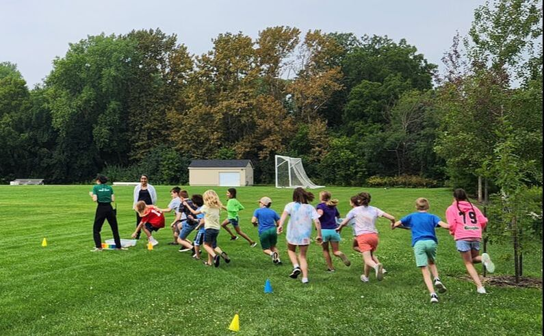
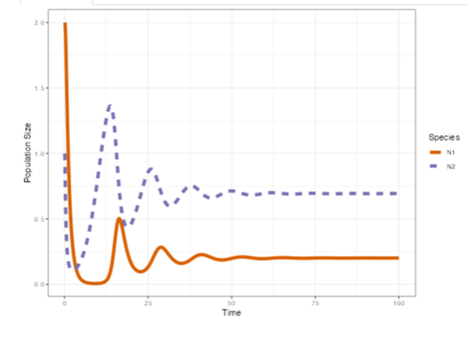

Should I stay or should I go? 'Running' migration simulations

Students learn about math modeling and animal migration through playing a game and exploring simulations.
This event was run at
Bell Museum
summer camps for 4th/5th graders in 2023 and 2024, and at
Itasca Biological
Station for incoming undergraduate students in summer 2024.
Find the module on QUBES here:
Torstenson MS, Balstad LJ, Shaw AK (2024). Simulating selection on migration. QUBES Educational
Resources.
doi:10.25334/G89V-6533.
Modeling two-species interactions with R Shiny
Students explore two species interactions (mutualism, competition, and predator-prey dynamics) from a
purely theoretical approach using an R Shiny app.
This module is currently used in the UMN undergraduate course EEB3407 (Ecology).
Find the module on QUBES here:
Wojan C, Furey G, Lehman C, Stanton D, Shaw A (2024). Modeling Two Species Interactions Educational
Module. QUBES Educational Resources.
doi:10.25334/7WDP-ZW19.
